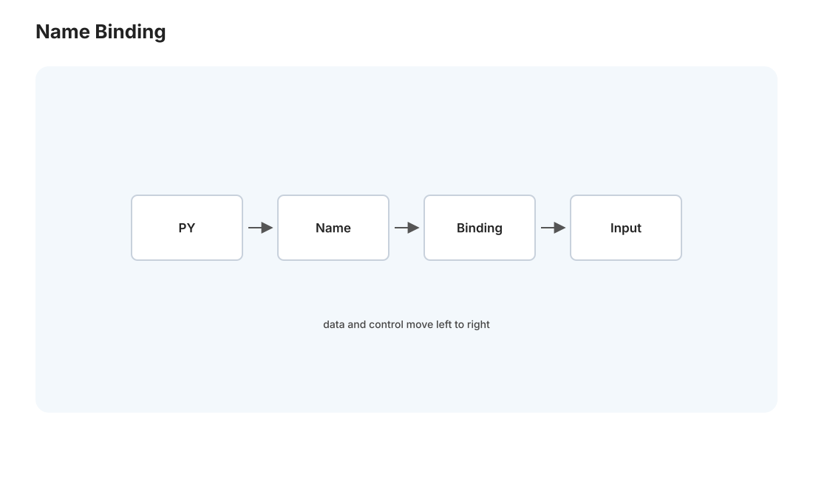
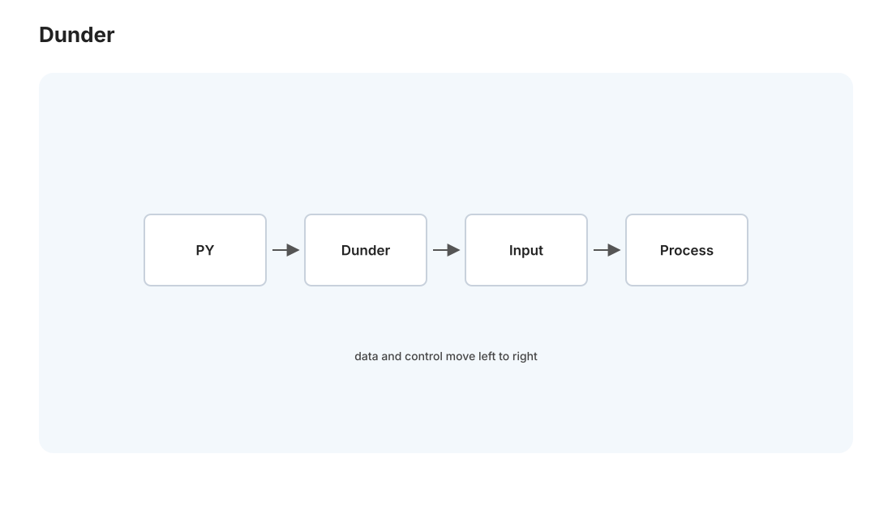
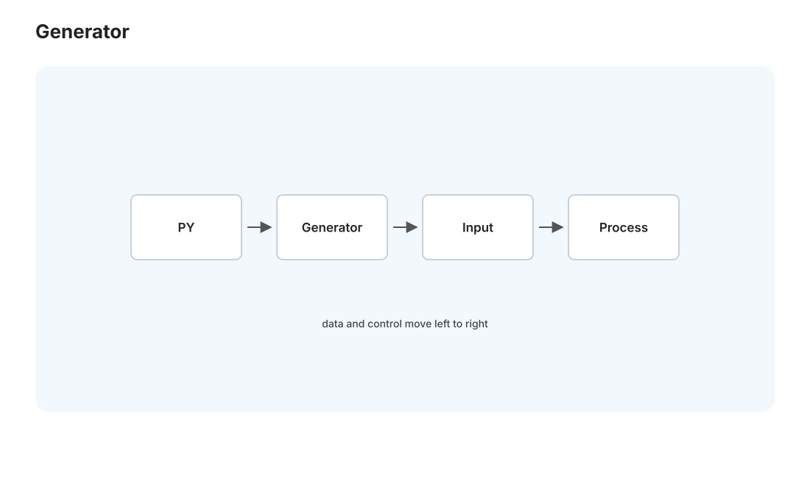

本页目录
Python I · 数据模型与惯用法
对标：Fluent Python（Ramalho）/ CPython 官方数据模型 ｜ 前置：CS61A（抽象、高阶函数）、pl-02（动态类型、鸭子类型的理论） 你天天用 Python 写 Medusa——但"会用"和"懂它的设计"是两回事。这一页讲 Python 之所以是 Python 的那套核心机制：一切皆对象的数据模型、特殊方法（dunder）如何让你的类无缝接入语言、鸭子类型的哲学、以及迭代器/生成器这套让 Python 代码"Pythonic"的惯用法。理解它，你会从"照着写"升级到"按语言的意图写"，Medusa 的数据处理代码会更干净。
1. 一切皆对象：Python 的世界观

Python 里一切都是对象——数字、字符串、函数、类、模块，全是对象，都有身份（id）、类型（type）、值。这不是口号，有实际后果：
- 变量是名字，不是盒子：a = [1,2]; b = a 让 a、b 指向同一个对象（不是拷贝）——改 b 也改 a。理解"名字绑定到对象"而非"变量装值"，是避免 Python 别名 bug 的关键（🔗 与 csapp-01 "C 变量是字节盒子"形成鲜明对比——Python 变量是引用）。
- 可变 vs 不可变：int/str/tuple 不可变、list/dict/set 可变——默认参数用可变对象是经典坑（def f(x, acc=[]) 的 acc 在多次调用间共享！）。
- 函数是一等对象：能赋值、传参、返回、存进容器（🔗 CS61A、pl-01 λ 演算的直接后裔）——装饰器、回调、策略模式全建立在此。
2. 数据模型与 dunder：接入语言的钩子

Python 最优雅的设计——特殊方法（dunder methods，__xxx__）让你的自定义类无缝接入语言的语法和内置函数。你不是"调用方法"，而是"实现协议"，然后语言的语法自动为你工作：
| 你写 | Python 调用 | 你实现 |
|---|---|---|
len(x) |
x.__len__() |
长度协议 |
x[k] |
x.__getitem__(k) |
下标/切片 |
x + y |
x.__add__(y) |
运算符重载 |
for i in x |
x.__iter__() |
迭代协议 |
if x: |
x.__bool__() |
真值测试 |
with x: |
x.__enter__/__exit__ |
上下文管理 |
print(x) |
x.__repr__/__str__ |
显示 |
核心洞察：Python 的语法是一层协议，dunder 是协议的实现点。实现了 __len__ 和 __getitem__，你的类就"是"一个序列——len()、下标、切片、迭代、in 全部自动可用。"实现协议而非继承基类"就是鸭子类型（下节）。这让 Python 的抽象极其灵活：写一个行为像列表的类，不需要继承 list，只要实现对的 dunder。
3. 鸭子类型：像鸭子叫就是鸭子
鸭子类型："如果它走起来像鸭子、叫起来像鸭子，那它就是鸭子"——Python 不检查对象的类型，只检查它有没有需要的方法/属性（🔗 pl-02 动态类型的实用哲学）。你要一个"能迭代的东西"，任何实现了 __iter__ 的对象都行，不管它是不是某个基类的子类。
- 好处：极度灵活、松耦合——函数接受"任何行为对得上的对象"，易测试（传个 mock 就行）、易扩展。
- 代价：类型错误要运行时才暴露（跑到那行才知道对象没有那个方法）——所以 Python 靠测试（🔗 se-01）和类型注解（下节）补安全。
- 协议 > 继承：Python 偏爱"你能做什么"（协议）胜过"你是什么"（继承）——
typing.Protocol把这个哲学显式化（结构化子类型，🔗 pl-01 类型系统）。
4. 迭代器与生成器：惰性的威力

Python 惯用法的核心——迭代器协议 + 生成器：
- 迭代器：实现 __next__ 的对象，逐个产出值、耗尽即止。for 循环、in、解包全走它。
- 生成器（yield）：写一个带 yield 的函数，它暂停/恢复、惰性产出值——不是一次性算出整个列表，而是要一个算一个。这是处理大数据/流的关键（🔗 adv-01 流算法、web-02 流式响应的语言级支持）。
def read_articles(cursor): # 生成器：不把全部文章load进内存
while (row := cursor.fetchone()):
yield process(row) # 逐条产出，内存恒定
对 Medusa 直接有用：处理上万篇文章时，用生成器逐条流式处理而非 list(所有文章)——内存从"全部数据"降到"一条"。生成器表达式 (f(x) for x in big)、itertools（惰性组合子）是 Python 处理大数据的正道。"能惰性就别急切"是 Pythonic 的重要一条。
5. Pythonic 惯用法速览
让代码"像 Python 而非翻译过来的 Java/C"：
- 推导式：[f(x) for x in xs if pred(x)] 胜过手写循环 append——更快更清晰（🔗 pl-02 函数式的 map/filter）。
- 解包与多返回：a, b = b, a（交换）、first, *rest = seq、函数返回元组。
- enumerate/zip：别用 range(len(x)) 手动索引——for i, v in enumerate(xs)、for a, b in zip(xs, ys)。
- with 上下文管理：文件、锁、数据库连接用 with——保证资源释放（🔗 与 RAII cpp-01、Rust drop 同思想：作用域即生命周期）。
- EAFP 而非 LBYL："请求原谅比请求许可容易"——用 try/except 而非一堆前置检查（符合动态语言的气质）。
- f-string：f"{name}: {value:.2f}" 格式化。
方法论：Pythonic 不是炫技，是"顺着语言的设计写"——推导式、生成器、上下文管理、鸭子类型都让代码更短、更清晰、更少 bug。写 Medusa 时多问一句"这段有没有更 Pythonic 的写法"，代码质量会稳步提升。
6. 练习与要点
例 1（可变默认参数坑） 写 def append_to(x, lst=[]) 连续调两次，观察第二次 lst 里有上次的残留——理解"默认参数在定义时求值一次、可变对象被共享"，Python 最著名的坑之一，Medusa 里要警惕。
例 2（实现一个序列） 写一个类只实现 __len__ 和 __getitem__，验证它自动支持 len()、下标、切片、for 迭代、in——亲手体会"实现协议就接入语言"，dunder 的威力一次看懂。
例 3（生成器省内存） 把一个"读全部文章进 list 再处理"的函数改成生成器逐条 yield——用 sys.getsizeof 或内存监控对比。把"惰性流式"用到 Medusa 的真实数据处理。\(\blacksquare\)
下一页：Python II——运行时、GIL 与性能生态：CPython 底下是什么、为什么 Python"慢"、GIL 如何限制并发、以及 numpy/异步/打包这套生态怎么补救。